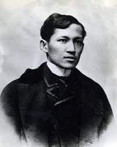

About Jose Rizal
Jose Rizal (1861-1896) was a Filipino nationalist, writer, and polymath. He is considered a national hero of the Philippines for his key role in advocating for reforms and freedom during the Spanish colonial era. Rizal's literary works, such as Noli Me Tangere and El Filibusterismo, exposed the injustices and abuses suffered by the Filipino people under Spanish rule.
Rizal was not only a prolific writer but also a physician, sculptor, painter, educator, and more. He championed education as a means of empowerment and enlightenment, emphasizing the importance of critical thinking and national identity.
His ideals and sacrifices continue to inspire generations of Filipinos, and his legacy remains significant in Philippine history.
